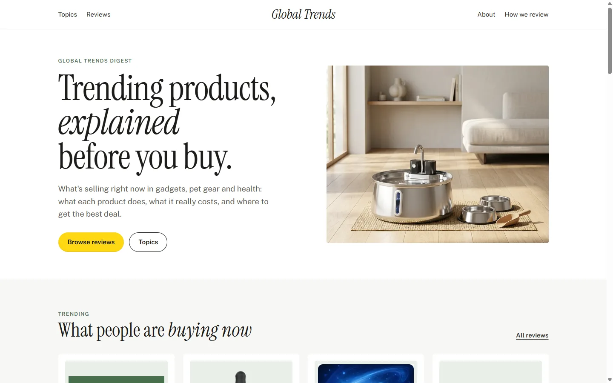
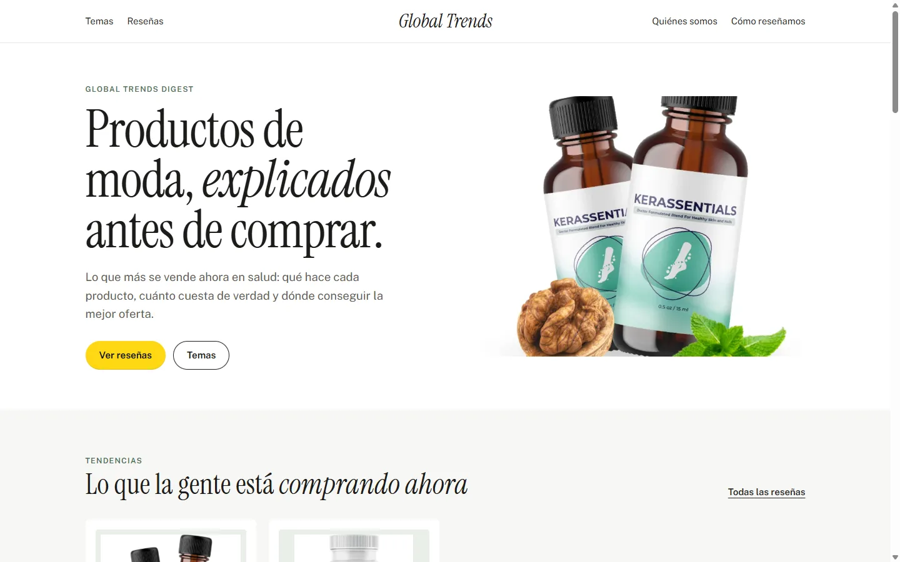

Operação e evolução
Global Trends Digest
Site de avaliações de produtos em 10 idiomas, gerado e publicado de forma automática. Assumi a operação diária e a evolução do projeto, trabalhando com agentes de IA.
- Uma página nova por dia, seguindo regras escritas de estrutura, SEO e tom.
- Dois revisores automáticos conferem cada página: um olha buscadores e regras, o outro olha a leitura.
- Nada vai ao ar sem aprovação humana. Depois, um relatório chega por e-mail.
- Versões em 10 idiomas, com endereços e estrutura próprios para cada um.
- Claude Code
- Python
- SEO
- Git e GitHub

